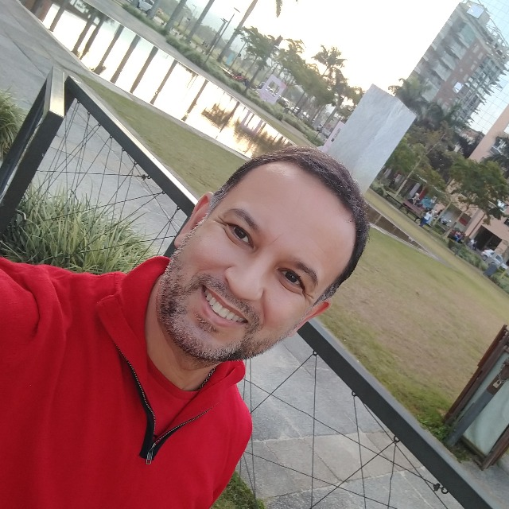

Olá, Mundo!!!
A tradição (ou superstição 😅) orienta para sempre iniciar um aprendizado de programação com a tradicional frase "Olá Mundo!". Na vida, muitos paradigmas precisam ser quebrados, mas... podemos deixar alguns assim como estão. Afinal, em time que está ganhando não se mexe. Não que eu seja supersticioso, é claro.
Esta página surge com uma ferramenta de organização, aprimoramento e troca de conhecimentos. Por meio dela estabeleço a organização e a estrutura dos meus exercícios da formação Fullstack, que teve seu início com o projeto Floripa Mais Tec. Deixando também uma oportunidade para colaboradores e iniciantes, como eu, de observar, palpitar e buscar ideias para projetos futuros.